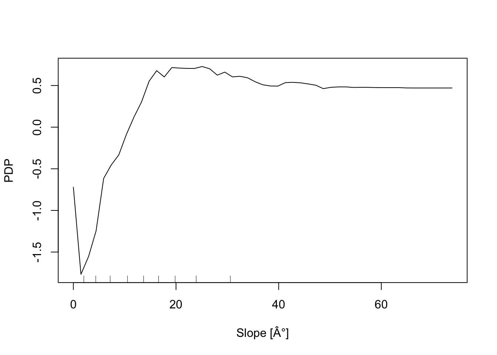
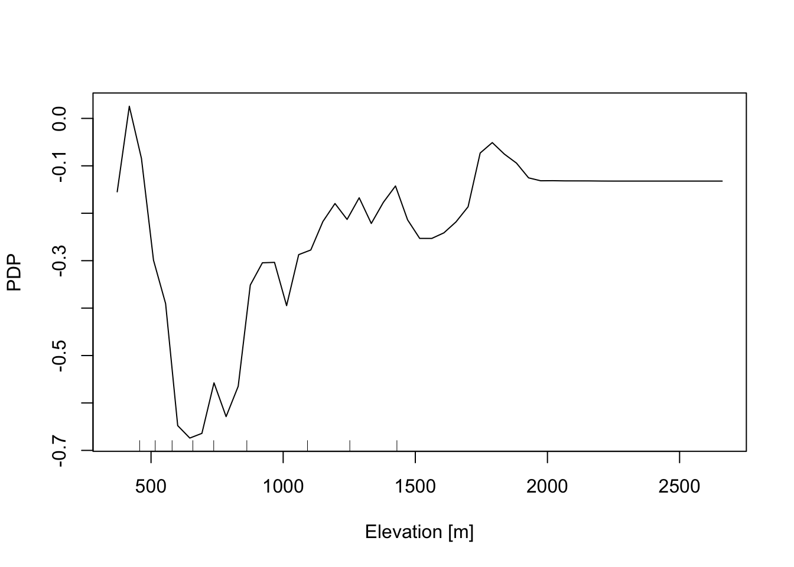
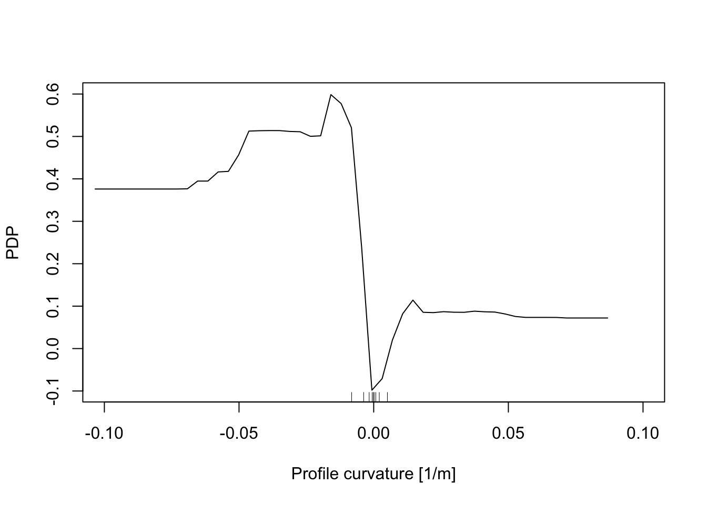
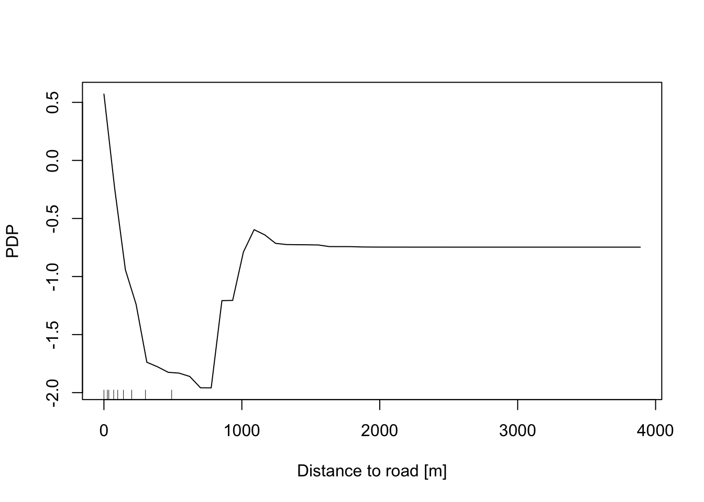
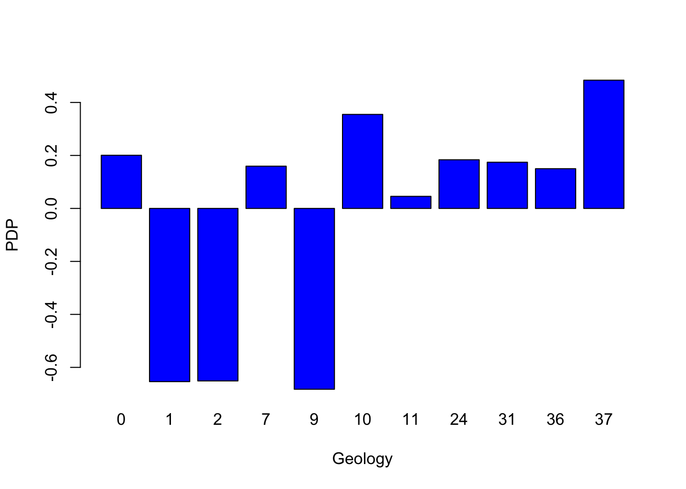
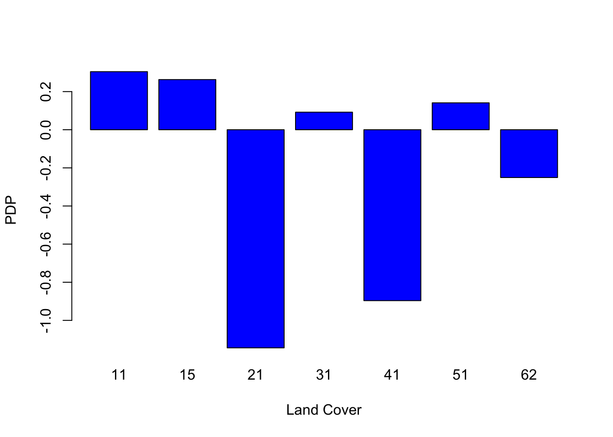

Chapter 6 Interpretability & Explainability with Random Forest
The distinction between interpretability and explainability lies in their focus and depth. We can say that interpretability focuses on understanding the inner workings of the models, while explainability focuses on explaining the decisions made.
Model complexity: when dealing with intricate models like Random Forest (with tens of variables and thousands of trees), up to deep neural networks, interpretability becomes challenging due to their complexity and the interplay among their components. In such scenarios, explainability proves to be a more practical approach, as it focuses on clarifying decisions rather than delving into the complexities of the model.
Communication: in terms of audience and purpose, interpretability primarily concerns machine learning specialists , whereas explainability targets end users seeking to grasp model decisions. Consequently, explainability necessitates a more straightforward and intuitive communication of information.
While Random Forest models are powerful and often yield high accuracy, interpretability can be challenging due to their complex structure and the high number of tress. However, the following techniques can enhance the interpretability and explainability of Random Forest models.
A surrogate model, such as a single decision tree, can approximate the predictions of a more complex model like a Random Forest, which is composed of thousands of decision trees. The surrogate model is more interpretable and helps in understanding the general rules that the Random Forest model follows.
For explainability, examining feature importance scores, which measure the contribution of each variable to the model’s predictions, allows us to identify the most influential variables in the model’s decisions. In addition, partial dependence plots enable us to visualize how changes in a variable influence the model’s predictions, making this tool useful for interpreting the global effects of predictors across the entire dataset.
6.1 Aim of the present lab
In this computing lab you will work with the outputs of Random Forest resulting from the lab on landslides susceptibility map (LSM_RF).
Firstly, we will explore the relative importance of the predictor variables (feature importance scores) , and their relative probability of prediction success (partial dependence plots).
In the second part, we will apply a local version of Random Forest (named “Geographical Random Forest”) to analyse the spatial heterogeneity of the local variable importance.
6.1.1 Re-load libraries and workspace
If you have quit the workspace where you have run the RF model for landslide susceptibility map you need to load it again in this new project. Loading the workspace refers to the action of restoring the saved state of R environment. When you save your workspace in R, it typically includes all the objects (such as variables, functions, data frames, etc.) that are currently present in your R session. Loading the workspace means to restore this saved state, bringing back all the previously saved objects into your current R session.
## [1] "RColorBrewer" "tidyr" "randomForest" "classInt" "plotROC"
## [6] "ggplot2" "pROC" "dplyr" "readr" "foreign"
## [11] "terra" "stats" "graphics" "grDevices" "utils"
## [16] "datasets" "methods" "base"6.2 Features importance score
Although machine learning algorithms are often considered as a black box, with RF is possible to plot a sample tree (selected randomly) to analyse its structure and investigate how decisions have been made. In addition RF provides two scores allowing to assess the importance of each variables in the model: the mean decrease in accuracy (MDA), and the mean decrease in Gini index. Higher values indicate the most important variables.
# Display the plot with the relative importance of each variable
importance(RF_LS)
varImpPlot(RF_LS)
6.2.1 Partial dependence plot
In addition, the Partial Dependence Plot (PDP) allows us to estimate, for each single variable, the relative probability of prediction success over different ranges of values. PDP provides a graphical depiction of the marginal effect of each variable on the class probability over different ranges of continuous or discrete values. Positive values are associated with the probability of occurrence of the phenomena (i.e., landslides presence), while negative vales indicate its absence.
# Slope
partialPlot(RF_LS, LS_train, x.var = slope, rug = TRUE,
which.class = RF_LS$classes[2],xlab= "Slope [°]",
main = "", ylab = "PDP")
# Elevation
partialPlot(RF_LS, LS_train ,x.var = DEM, rug = TRUE,
which.class = RF_LS$classes[2],xlab= "Elevation [m]",
main = "",ylab = "PDP")
# Profile curvature
partialPlot(RF_LS, LS_train, x.var = profCurv, rug = TRUE,
which.class = RF_LS$classes[2],xlab= "Profile curvature [1/m]",
main = "", ylab = "PDP", xlim = c(-0.1,0.1))
# Plan Curvature
partialPlot(RF_LS, LS_train, x.var = planCurv, rug = TRUE,
which.class = RF_LS$classes[2],xlab= "Plan curvature [1/m]",
main = "", ylab = "PDP", xlim = c(-0.1,0.1))
# Distance to road
partialPlot(RF_LS, LS_train, x.var = distRoad, rug = TRUE,
which.class = RF_LS$classes[2],xlab= "Distance to road [m]",
main = "", ylab = "PDP")
# Topographic wetness index
partialPlot(RF_LS, LS_train, x.var = TWI, rug = TRUE,
which.class = RF_LS$classes[2],xlab= "TWI [-]",
main = "", ylab = "PDP")
# Geology
partialPlot(RF_LS, LS_train, x.var = geology, rug = TRUE,
which.class = RF_LS$classes[2],xlab= "Geology",
main = "", ylab = "PDP")
# Land cover
partialPlot(RF_LS, LS_train, x.var = landCover, rug = TRUE,
which.class = RF_LS$classes[2],xlab= "Land Cover",
main = "", ylab = "PDP")